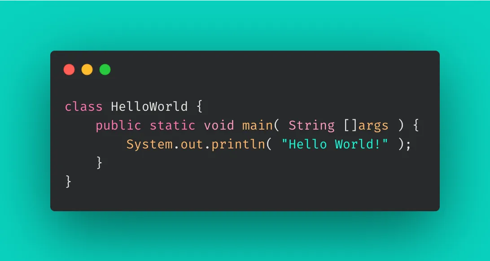
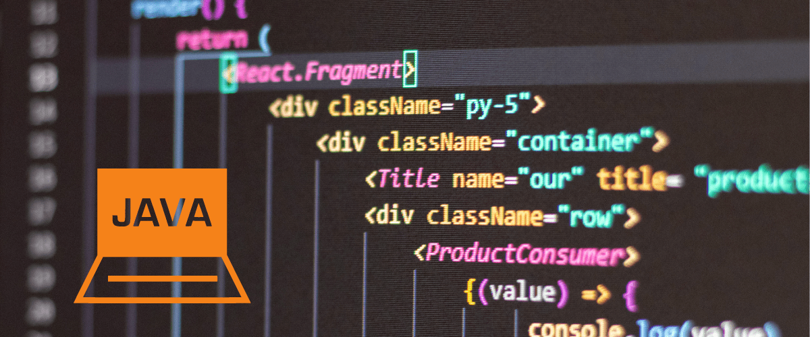

Java se ha convertido con el tiempo en una de las plataformas más populares entre los desarrolladores, y en uno de los lenguajes de programación modernos preferidos para el diseño de aplicaciones empresariales.
Después de todo, reduce los costes, acorta el tiempo de desarrollo, impulsa la innovación y mejora los servicios de las aplicaciones.
En este artículo, vamos a explorar por qué Java es una de las plataformas y lenguajes más utilizados por los desarrolladores y programadores web, y cuál es su utilidad en la industria.
¿Qué es JAVA?
En 1995 Sun Microsystems lanzó Java por primera vez como un lenguaje de programación y una plataforma informática.
Desde sus humildes orígenes ha crecido hasta impulsar gran parte del mundo digital actual, ofreciendo una plataforma segura sobre la que se construyen muchos servicios y aplicaciones.
En 2010 la prestigiosa marca Oracle compró Java a Sun Microsystems.
Hoy en día, se desarrollan innovadores productos y servicios digitales utilizando Java como plataforma, lo que demuestra su versatilidad y lo preparado que está para el futuro.
Una de las cualidades más destacadas de Java es su arquitectura WORA: «write once, run anywhere» (escríbelo una vez, ejecútalo en donde sea)
Esto significa que una vez que se escribe un programa en Java, se puede ejecutar en cualquier plataforma que tenga una máquina virtual de Java (JVM) instalada.
En su esencia, permite a los desarrolladores escribir código una sola vez y ejecutarlo en diferentes sistemas operativos y dispositivos. Al mismo tiempo, les permite crear programas más modulares de fácil actualización.

¿Cuáles son las características del lenguaje de programación JAVA?
Como ya hemos comentado, Java es un lenguaje de programación de alto nivel, de propósito general, que se utiliza para desarrollar aplicaciones para una variedad de plataformas.
Algunas de las características principales de la plataforma y el lenguaje de programación Java son:
- Orientado a objetos: Es un lenguaje orientado a objetos, lo que significa que se basa en el concepto de objetos y clases para organizar y estructurar el código.
- Multiplataforma: Es independiente de la plataforma, lo que significa que el código Java se puede ejecutar en cualquier sistema operativo o dispositivo compatible con Java sin necesidad de recompilar el código.
- Seguro: Tiene características de seguridad integradas que ayudan a proteger los sistemas contra amenazas externas.
- Manejo automático de memoria: Libera automáticamente la memoria utilizada por objetos que ya no se utilizan.
- Multithreading: Permite la ejecución de varios hilos de ejecución en paralelo, lo que permite a las aplicaciones realizar varias tareas al mismo tiempo.
- APIs integradas: Dispone de una gran cantidad de APIs (interfaz de programación de aplicaciones) integradas, lo que permite a los desarrolladores utilizar una variedad de funciones y herramientas para crear aplicaciones.
- Popular: Es uno de los lenguajes de programación más populares y utilizados en el mundo. En su mayor parte, para el desarrollo de aplicaciones empresariales y el desarrollo de aplicaciones para Android.
¿Por qué usar JAVA?
Por lo general, los programadores informáticos utilizan Java para desarrollar aplicaciones de escritorio, servidores, sistemas operativos y aplicaciones para dispositivos móviles, plataformas IoT basadas en la nube, televisores inteligentes, sistemas empresariales, software industrial y otras muchas más aplicaciones.
A la postre, es uno de los lenguajes de programación más utilizados por las empresas debido a la estabilidad, rapidez y seguridad que ofrece.
A continuación citamos algunos de los usos más comunes de la programación Java.
- Aplicaciones de Escritorio: Para crear aplicaciones de escritorio se utiliza la plataforma Java SE (Standard Edition), que incluye un conjunto completo de herramientas de desarrollo, bibliotecas y componentes para desarrollar aplicaciones gráficas de usuario, bases de datos, redes y más.
- Aplicaciones empresariales: También se utiliza para desarrollar aplicaciones web utilizando la plataforma Java EE (Enterprise Edition), que proporciona un conjunto completo de herramientas, servlets, JavaServer Pages (JSP) y JavaServer Faces (JSF) para desarrollar, crear e implementar en línea aplicaciones empresariales basadas en la web y en la nube.
- Apps para Android: Otra de las aplicaciones destacadas es el desarrollo de aplicaciones móviles y juegos para dispositivos Android utilizando la plataforma Java ME (Micro Edition) y herramientas como Android Studio.
- Software Industrial: Por otro lado, se utiliza con frecuencia en la industria para desarrollar software para la planta de producción, crear herramientas de productividad y de gestión empresarial.
- Servicios financieros/Comercio Electrónico: En la industria financiera se emplea para desarrollar aplicaciones de banca online y en las empresas con muchos productos para crear webs de comercio electrónico (eCommerce). La escalabilidad y capacidad de Java en manejar grandes cantidades de datos es uno de los motivos por los cuales es elegido por gran parte de los desarrolladores de aplicaciones.
- IA y Machine Learning: En la industria de la inteligencia artificial y el aprendizaje automático, también tiene un papel importante, ya que muchas de las herramientas y bibliotecas utilizadas en estos campos están escritas en Java. Esto incluye el uso de Java en el desarrollo de sistemas de procesamiento de lenguaje natural (NLP) y sistemas de reconocimiento de voz.
- Aplicaciones IoT: Java es una de las opciones a la que recurren los desarrolladores de IoT debido a la accesibilidad con la que su código puede transferirse entre plataformas. En definitiva, tiene una buena funcionalidad para dispositivos restringidos (circuitos) con un alto nivel de funcionalidad, seguridad, conectividad y escalabilidad en las industrias y los hogares conectados.
- Gaming: Existe una gran cantidad de los juegos más populares del mercado que han sido desarrollados con Java. Entre ellos destacamos Pokemon GO, Minecraft, Clash Royale, Tetris, Angry Birds, Temple Run, por citar algunos.
En resumen, es un lenguaje de programación muy versátil que se utiliza para desarrollar una amplia variedad de aplicaciones, desde aplicaciones de escritorio y web hasta aplicaciones móviles y sistemas empresariales. Sus características principales lo hacen una excelente opción para desarrolladores de todos los niveles.

Volver
Información recopilada de: Aula21